GRAND THEFT AUSTERITY · 5 SEPTEMBER 2026The visible overhaul
Drag each divider to compare the previous release (e52d055) with the rebuilt game. These are unedited game screenshots at matched cameras, high quality and 16:00 lighting. Moving traffic, pedestrians and idle poses vary between frames.
New body geometry, rebuilt cars, articulated buildings and scanned surface materials. The original photo-fitted heads remain. This is a substantial browser-game asset upgrade; it is still stylized and does not match GTA VI production fidelity.
Player body
Continuous shoulders, hips and limbs, layered jacket and proper shoes.
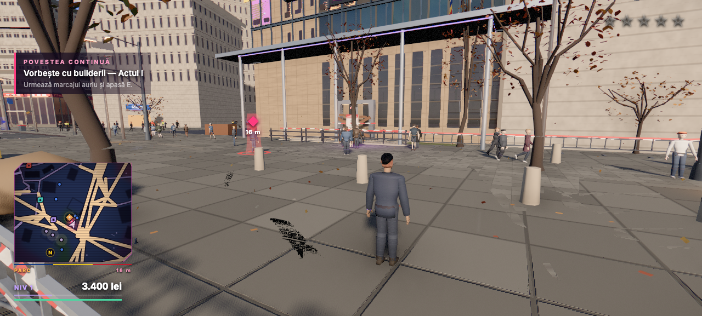
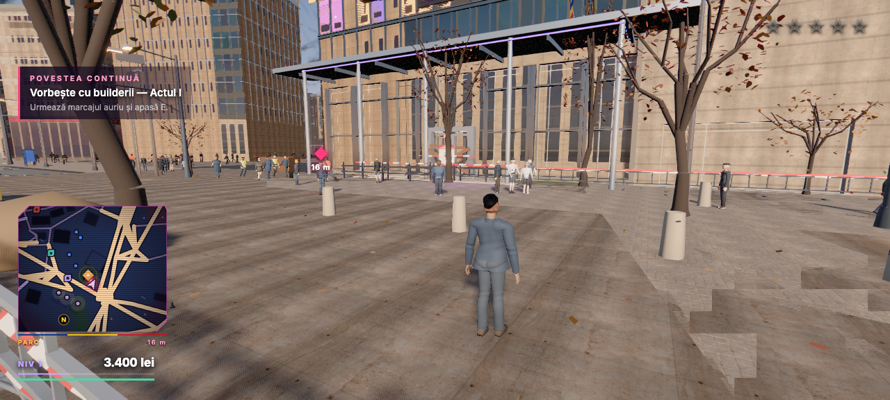
Previous releaseUpdated buildRecorder ally
Anatomical arms and hands, fitted tee and jeans. Parked cars and foliage are also replaced.
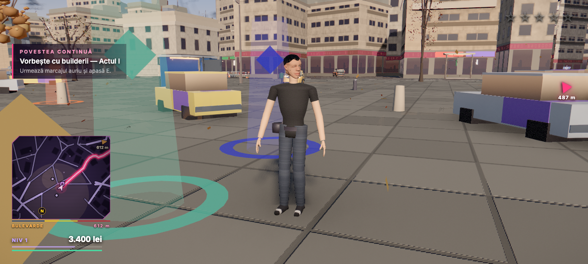
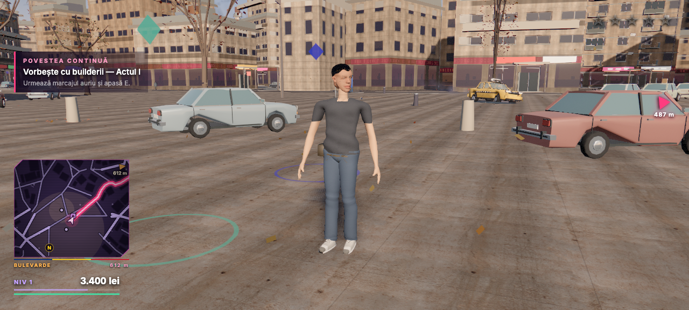
Previous releaseUpdated buildNicușor
A continuous full body with separate suit, shirt, lapels, cuffs and shoes.
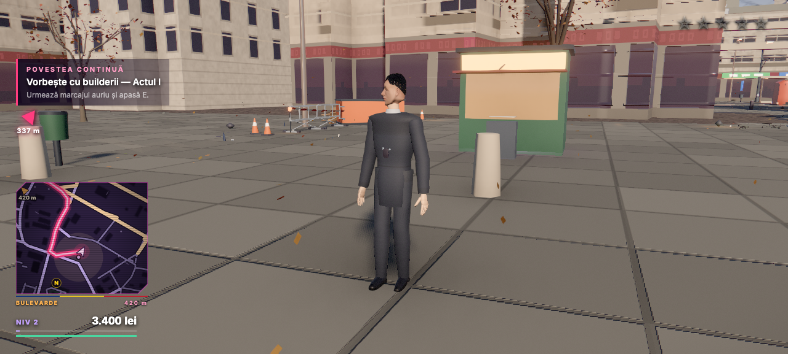
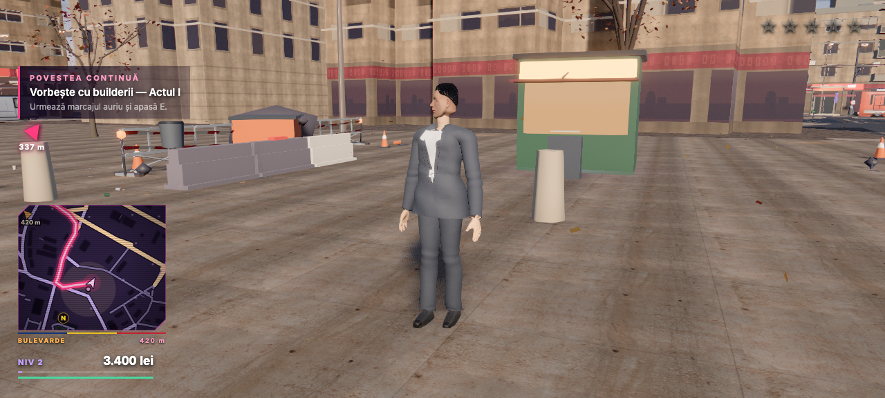
Previous releaseUpdated buildDacia 1300
Crowned bonnet and roof, curved glass, wheel arches, lamps, grille and seats.
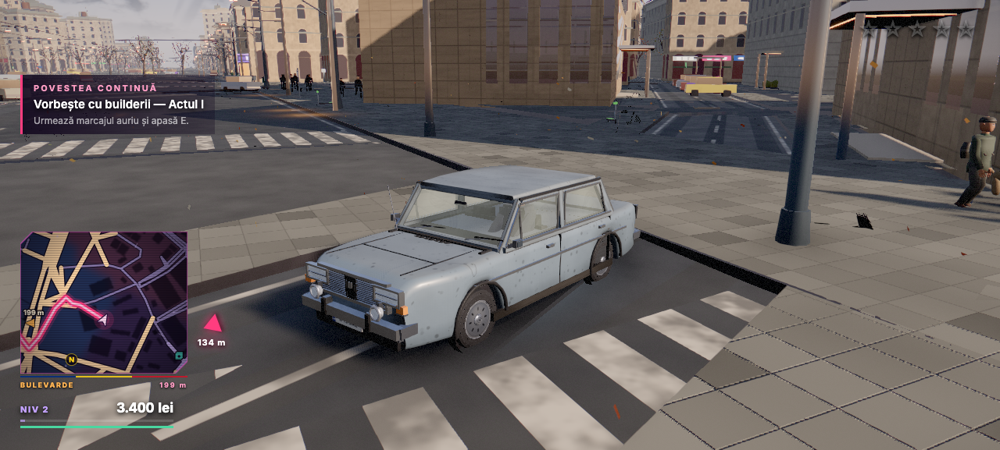
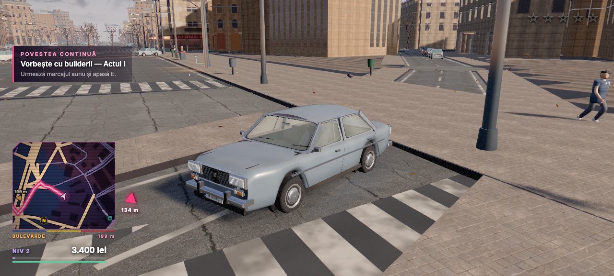
Previous releaseUpdated buildARO 24
Rounded utility body, inset glass, model-specific lamps, mirrors and detailed wheels.
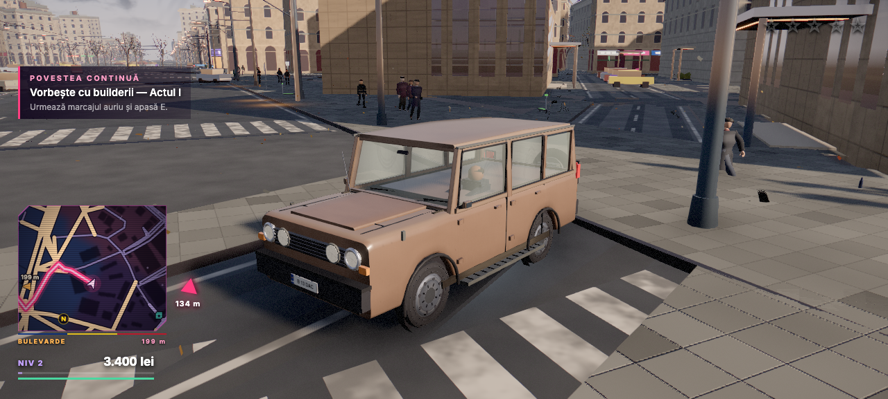
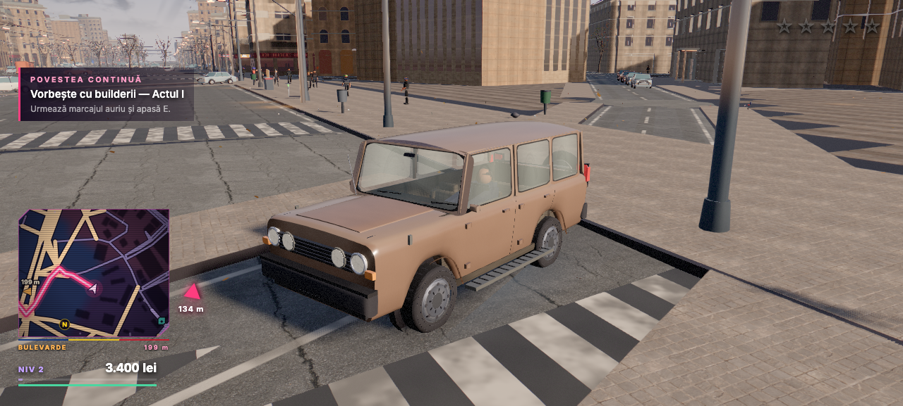
Previous releaseUpdated buildBuilders House forecourt
Scanned paving and concrete, recessed glazing and entrance details.
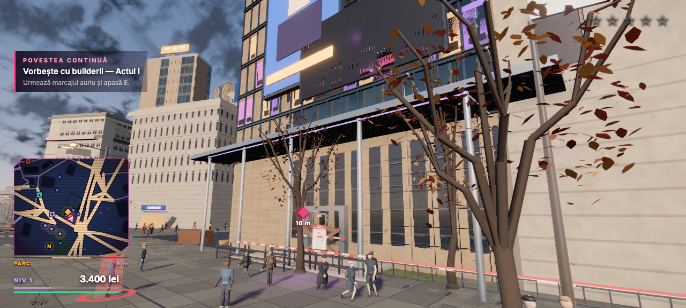
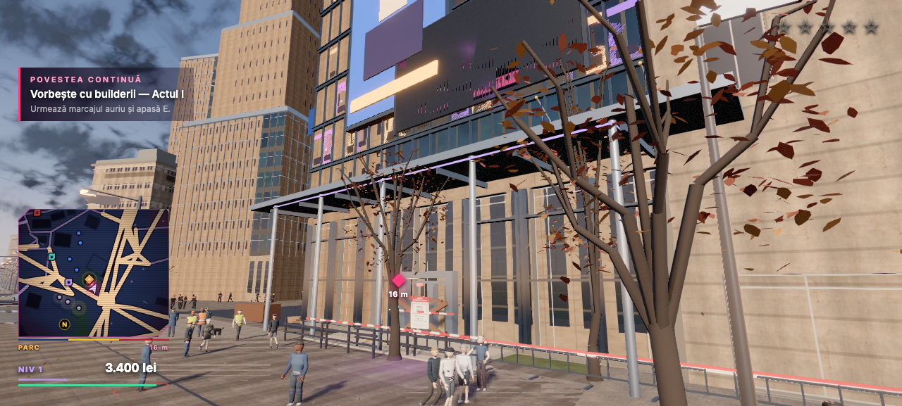
Previous releaseUpdated build